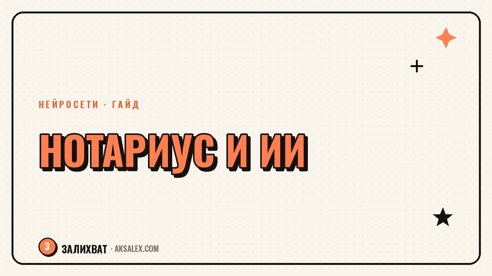

Нейросети для нотариуса: шаблоны и проверка документов

У нотариуса работа строится на формулировках: каждое слово в документе имеет юридический вес, а ошибка может стоить клиенту денег и времени на переделку. При этом контора держится на рутине - приём документов, набор типовых текстов, разбор обращений клиентов до визита. Нейросети не заменят нотариуса и не возьмут на себя удостоверение - это всегда личная подпись и печать. Но в том, что происходит вокруг удостоверения, они снимают заметную часть механической работы помощников и самого нотариуса.
Где нейросеть реально пригодится в нотариальной конторе
В работе конторы есть два слоя. Первый - само нотариальное действие: проверка личности, воли сторон, законности сделки, удостоверение. Здесь нейросеть не участвует и не должна участвовать - это зона личной ответственности нотариуса. Второй слой - подготовка: набор черновика по шаблону, разбор входящих вопросов, объяснение клиенту простым языком, что ему нужно принести на приём. Здесь нейросеть экономит часы в неделю.
Задачи, где нейросеть экономит время каждый день
- Набор черновика документа по шаблону с данными конкретного дела
- Проверка формулировки на противоречия перед подписью
- Подготовка понятного ответа клиенту на типовой вопрос про документы и сроки
- Перевод текста доверенности на другой язык для сверки
- Список документов на конкретный вид сделки
Как проверять документ с нейросетью: порядок действий
Самая частая ошибка - просить модель 'проверить договор на юридическую корректность' и доверять ответу как заключению юриста. Модель не знает практику твоего региона и не несёт ответственности за результат, поэтому использовать её нужно узко: как второй взгляд на формулировку.
- Берёшь готовый шаблон документа, которому контора уже доверяет
- Даёшь модели шаблон и данные дела, просишь заполнить строго по шаблону без лишних пунктов
- Отдельно просишь найти противоречия внутри текста - разные даты, суммы, несовпадающие имена сторон
- Финальную проверку и решение всегда делаешь сам
Нейросеть ускоряет подготовку черновика, но не проверяет документ на соответствие закону. Ответственность за содержание и подпись остаётся за нотариусом.
Подготовка к приёму клиентов
Часть времени на приёме уходит не на удостоверение, а на объяснение клиенту, что происходит и почему это так долго. Если заранее подготовить короткую памятку - что принести, сколько это будет стоить, сколько займёт - клиент приходит подготовленным, и приём проходит быстрее. Нейросеть хорошо справляется с переупаковкой сухого юридического текста в понятную инструкцию: берёшь регламент по виду сделки и просишь сделать из него короткий список простым языком.
- Список документов на конкретный вид сделки для сайта или памятки на стойке
- Короткий ответ на частый вопрос по телефону, который можно переслать клиенту текстом
- Черновик объявления о графике работы конторы на праздники
- Шаблон письма партнёрам (банкам, риэлторам) о порядке взаимодействия
Какие нейросети подходят для такой работы
Для текстовой работы с черновиками и проверкой формулировок достаточно универсальной языковой модели с чатом. Выбор конкретного сервиса зависит от того, где контора готова хранить данные клиентов: часть сервисов работает только за рубежом, часть предлагает российские облака.
| Сервис | Для чего использовать | Что учесть |
|---|---|---|
| Универсальный чат-бот (зарубежный) | Черновики, проверка формулировок, перевод | Не загружать персональные данные клиентов в открытый чат |
| Российский текстовый сервис | Те же задачи с хранением данных на территории РФ | Меньше возможностей в сложных формулировках, чем у топовых зарубежных моделей |
| Голосовой расшифровщик | Перевод голосового сообщения клиента в текст черновика | Нужна ручная проверка имён собственных и цифр после расшифровки |
| Табличный помощник | Учёт приёмов, свод часто задаваемых вопросов | Подходит для рутинного учёта, не для юридической оценки |
Риски, о которых нужно знать заранее
Главный риск - персональные данные. В работу нотариуса попадают паспортные данные, сведения об имуществе, иногда данные о здоровье или семейном положении. Загружать такие данные в открытый чат без понимания, как сервис хранит информацию, рискованно вне зависимости от удобства. Разумный подход - обезличивать данные перед тем, как давать их модели: убирать конкретные фамилии и номера документов, оставляя только структуру текста.
Второй риск - слепое доверие к результату. Модель может уверенно написать формулировку, которая звучит правильно, но юридически неточна для региона или вида сделки. Любой текст после нейросети проходит обычную проверку так же, как если бы его написал новый сотрудник - по чек-листу, а не по ощущению, что текст выглядит грамотно.
Частые вопросы
Может ли нейросеть заменить нотариуса при оформлении документов?
Нет, удостоверение сделки и ответственность за её законность остаются только за нотариусом. Нейросеть может ускорить подготовку черновика и найти явные противоречия в тексте, но решение и подпись всегда принимает человек.
Какие нейросети лучше подходят для работы с юридическими шаблонами?
Для набора черновиков и проверки формулировок достаточно универсальной языковой модели с хорошей работой с текстом на русском. Выбор между зарубежным и российским сервисом определяется тем, где контора готова хранить данные клиентов.
Безопасно ли загружать данные клиентов в нейросеть?
Напрямую загружать паспортные данные и сведения об имуществе в открытый чат не стоит. Безопаснее сначала обезличить текст - убрать имена и номера документов, оставив только структуру формулировки.
С чего начать нотариусу, который никогда не пользовался нейросетями?
Начать стоит с простой задачи - переформулировать обезличенный шаблон проще для клиента или собрать частые вопросы в памятку. Это не требует загрузки личных данных и сразу даёт экономию времени.
Как проверить, что черновик, составленный нейросетью, не содержит ошибок?
Сверяешь черновик с оригинальным шаблоном построчно: совпадают ли даты, суммы, имена сторон и реквизиты. Отдельно просишь модель саму найти противоречия, а финальное решение принимаешь сам.
Раз тема оказалась полезной, вот что почитать следующим. Как собрать UGC-контент от подписчиков и превратить его в посты, не нарушая ничьих прав.
Читать статью →а не вручную